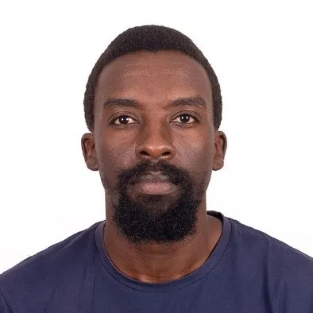
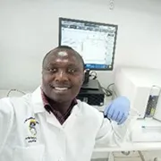

Our People
World‑class researchers, clinicians, and innovators united to end preventable placental diseases.

Prof. Jesse Gitaka, MBChB, MTM, PhD
Physician scientist, senior lecturer, and principal investigator and visiting associate Professor at the Institute of Tropical Medicine, Nagasaki University, Japan. His research focuses on tropical diseases, maternal and newborn health through the development of improved, fast, and reliable rapid diagnostics for applications mainly in resource-limited settings.
He is an affiliate of the African Academy of Sciences, a Next Einstein Fellow, and winner of the Kenya Newton Prize for the year 2020. His hobbies are playing football, Chess, and sightseeing, especially in the rich Kenyan wild.
Senior Research Faculty
Leading breakthrough research in placental medicine

Bernard N. Kanoi, PhD
Biomedical Scientist & EDCTP Fellow
Pioneered the application of the Wheat Germ Cell-free System in malaria research. Focuses on malaria immuno-epidemiology, vaccine development, and Immunotherapeutics.

Kobia Francis, PhD
Postdoctoral Fellow | Molecular Biologist
Investigating the molecular basis of fetal-maternal innate immune conflict in human placental malaria. Specializes in cellular signaling and host-parasite interactions.

Samuel Mbugua, PhD
Implementation Scientist
Translating research into practice, focuses on the management of Serious Bacterial Infections and optimizing cervical cancer care pathways in Kenya.
Lab & Field Team

Allan Wanjira
Lab Assistant
microbiology and biotechnology professional with a deep interest in the molecular and applied dimensions of microbial science.
Rachael Wachuka, MSc
Modelist
Tropical disease research, Advanced immunology, and Clinical assay development.
Harrison Waweru
Data Scientist
Statistical modeling, Genomic data processing, and Data visualization.
Mark Makau
Lab Technician
DNA/RNA extraction, Laboratory quality control, and Instrument maintenance.
Paul Adamba
Lab Technician
Histology, Tissue staining techniques, and Microscopy support.
Antony Kipkoech
Research Assistant, Social Media Manager, & Relation Manager
Reagent preparation, Laboratory safety compliance, and Sample cataloging.
Ronnie Mwangi
IT Support
Server maintenance, Network security, and Research data backup.
Melvin Mbalitsi
Logistics Specialist
Cold chain logistics, Field transport, and Sample delivery safety.

Samuel M. Nganga
Lab Manager
Facility management, Procurement, and Infrastructure support.
Join our growing team
We welcome postdocs, PhD students, and research assistants passionate about maternal health.